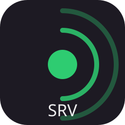

<!-- @dsCard group="Server" viewport="900x620" name="Server status page" subtitle="GET / — branded proposal, in the client's own visual language" -->
<meta charset="utf-8">
<title>aucl.greluc.me — AnotherCrewLink</title>
<link rel="stylesheet" href="../../styles.css">
<script src="https://unpkg.com/react@18.3.1/umd/react.development.js" integrity="sha384-hD6/rw4ppMLGNu3tX5cjIb+uRZ7UkRJ6BPkLpg4hAu/6onKUg4lLsHAs9EBPT82L" crossorigin="anonymous"></script>
<script src="https://unpkg.com/react-dom@18.3.1/umd/react-dom.development.js" integrity="sha384-u6aeetuaXnQ38mYT8rp6sbXaQe3NL9t+IBXmnYxwkUI2Hw4bsp2Wvmx4yRQF1uAm" crossorigin="anonymous"></script>
<script src="https://unpkg.com/@babel/standalone@7.29.0/babel.min.js" integrity="sha384-m08KidiNqLdpJqLq95G/LEi8Qvjl/xUYll3QILypMoQ65QorJ9Lvtp2RXYGBFj1y" crossorigin="anonymous"></script>
<script src="../../_ds_bundle.js"></script>
<style>
html,body{margin:0}
body{background:var(--acl-bg-titlebar);color:var(--text-body);font-family:var(--font-ui);min-height:100vh}
main{max-width:820px;margin:0 auto;padding:40px 24px 56px}
.head{display:flex;align-items:center;gap:18px}
.head img{height:64px}
.lede{font-size:var(--size-lede);line-height:1.6;margin:20px 0 0;max-width:56ch;color:#fff}
.lede a{color:var(--accent-primary)}
.panel{background:var(--surface-app);border:4px solid #fff;border-radius:var(--radius-lg);padding:18px 20px}
.grid{display:grid;grid-template-columns:repeat(3,1fr);gap:16px;margin-top:28px}
.stat{font-family:var(--font-mono);font-weight:var(--weight-medium);font-size:var(--size-stat);line-height:1;letter-spacing:.02em}
.label{font-size:var(--size-meta);color:var(--text-quiet);margin-top:8px}
.pill{display:inline-flex;align-items:center;gap:8px;border:var(--border-button) solid var(--state-online);color:var(--state-online);border-radius:var(--radius-pill);padding:2px 12px;font-size:var(--size-body)}
.dot{width:9px;height:9px;border-radius:var(--radius-round);background:var(--state-online)}
.address{display:flex;align-items:center;gap:14px;flex-wrap:wrap;margin-top:28px}
.chip{font-family:var(--font-mono);font-weight:var(--weight-medium);font-size:var(--size-code);padding:5px 10px;border-radius:var(--radius-sm);background:var(--crew-purple-shadow);letter-spacing:.02em}
.crew{display:flex;gap:2px;margin-left:auto}
table{width:100%;border-collapse:collapse;margin-top:14px;font-size:var(--size-body)}
th{text-align:left;font-weight:var(--weight-regular);color:var(--text-quiet);padding:8px 12px;border-bottom:1px solid var(--border-hairline)}
td{padding:10px 12px;border-bottom:1px solid var(--border-hairline)}
td:first-child{font-family:var(--font-mono);white-space:nowrap}
tr:last-child td{border-bottom:0}
h2{font:var(--text-heading);margin:36px 0 0}
footer{margin-top:36px;font-size:var(--size-meta);color:var(--text-quiet);line-height:1.6}
footer a{color:var(--accent-primary)}
</style>
<main>
<div class="head">

<div>
<div style="font-size:var(--size-hero);line-height:var(--line-tight)">aucl.greluc.me</div>
<div style="margin-top:8px"><span class="pill"><span class="dot"></span>Relaying</span></div>
</div>
<div class="crew" id="crew"></div>
</div>
<p class="lede">A voice relay server for <a href="https://github.com/greluc/AnotherCrewLink">AnotherCrewLink</a>. Voice is peer to peer and never passes through here unless a TURN relay is in play — this server routes signalling, hands out an ICE configuration and keeps the public lobby list.</p>
<div class="address">
<span style="font-size:var(--size-tooltip);color:var(--text-quiet)">Point the client at</span>
<span class="chip">https://aucl.greluc.me</span>
<span style="font-size:var(--size-tooltip);color:var(--text-quiet)">under Settings &rarr; Server</span>
</div>
<div class="grid">
<div class="panel"><div class="stat">34</div><div class="label">Connected</div></div>
<div class="panel"><div class="stat">6</div><div class="label">Lobbies</div></div>
<div class="panel"><div class="stat">18h&nbsp;42m</div><div class="label">Uptime</div></div>
</div>
<h2>Endpoints</h2>
<div class="panel" style="margin-top:14px;padding:6px 8px">
<table>
<thead><tr><th>Route</th><th>What it returns</th></tr></thead>
<tbody>
<tr><td>GET /health</td><td>Uptime, connection and lobby counts, and every refusal counter</td></tr>
<tr><td>GET /lobbies</td><td>The public lobby list. Cacheable for five seconds; carries no join code</td></tr>
<tr><td>GET /lobbies/{id}/code</td><td>One lobby's code, <code>no-store</code> — a code is the credential that gates entry to a game</td></tr>
<tr><td>GET /lobbies/stream</td><td>The list as server-sent events: the whole list once, then updates. Keep-alive every 20s</td></tr>
</tbody>
</table>
</div>
<footer>
WebSocket is the only transport, a signal is relayed only to a socket in the sender's own lobby, and the host of a lobby is the first socket to claim it. Every refusal is counted on <code>/health</code> — a rule that refuses silently is indistinguishable from a peer that never connected.<br>
This client speaks socket.io 4. Clients built on socket.io 2, including the original BetterCrewLink client, cannot connect. GPL-3.0-or-later · <a href="https://github.com/greluc/AnotherCrewLink-Server">source</a>
</footer>
</main>
<script type="text/babel">
const { Crewmate } = window.ACL_9b5df9;
const crew = ['red', 'blue', 'lime', 'pink', 'cyan'];
// No talking ring here: nobody is speaking on a status page, and #2ecc71 means exactly
// that one thing. The idle ring (#ccbdcc86) is the client's own decorative treatment.
ReactDOM.createRoot(document.getElementById('crew')).render(
  <>
    {crew.map((c) => (
      <Crewmate key={c} size={44} assetBase="../../assets" showBorder
        color={'var(--crew-' + c + ')'} shadow={'var(--crew-' + c + '-shadow)'} />
    ))}
  </>
);
</script>
